遊びで植物を育てよう
2022/02/20
去年挿し木した梅です。花が咲きました。
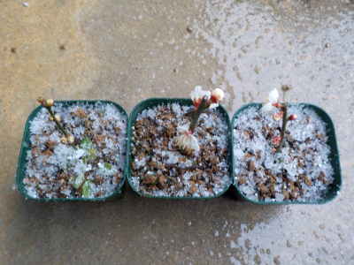
今日は雪が降ってて寒いですが、梅の花が咲いていたので写真を撮りました。
2本咲いてて、1本はまだ蕾が小さいです。
同じ木の枝を挿し木して同じ場所に置いていますが、成長が違いますね。
枝が太さが関係してそうです。
【梅TOP】
【果物TOP】
【園芸TOP】
2022/02/12
梅が咲いています。
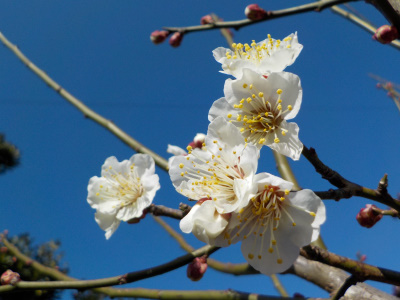
1週間前くらいからポツポツ咲きだして、ちょっと見栄えが良くなってきました。
今日は天気が良かったので、白が映えてキレイでした。
【梅TOP】
【果物TOP】
【園芸TOP】
2022/01/23
挿し木の梅の何かが膨らんできました。
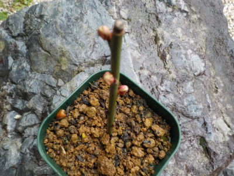
去年挿し木した梅から何かが出そうです。
花かな、芽かな。
今の時期なら花だろうな。花は栄養を使いそうだから嫌だな。でも花見もしたい。
【梅TOP】
【果物TOP】
【園芸TOP】
2021/10/31
挿し木の梅が虫に食べられてしまいました。
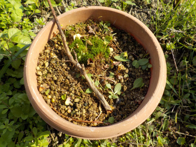
挿し木の梅の木が枯れました。
テッポウムシかな？木の中から食べられていました。
ガッカリです。次からは農薬を塗ろうと思います。
【梅TOP】
【果物TOP】
【園芸TOP】
2021/08/15
梅の挿し木を5本鉢上げしました。
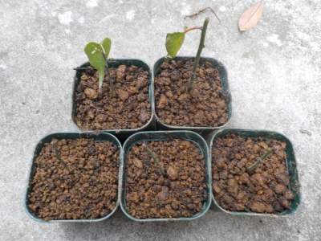
ペットボトルの底から根っこが見えたので鉢上げしました。
葉っぱと根っこがあるもの2本と、根っこだけあるもの3本です。
葉っぱが無いのは春に芽がでるのかな？心配です。
【梅TOP】
【果物TOP】
【園芸TOP】
2021/05/29
梅の挿し木を大量にしました。
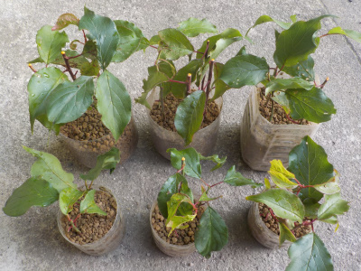
数打てば当る方式です。
数えてないですが、これだけあったら何本か成功しそうな気がします。
【梅TOP】
【果物TOP】
【園芸TOP】
2021/03/14
梅の挿木から芽がいっぱい出ました。
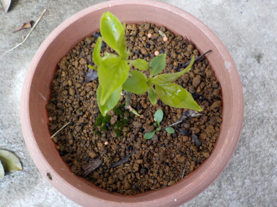
2月は梅の挿し木のホームページを見る人が多かったみたいです。
梅を挿し木で増やしたいって思う人が他にもいるんですね。
花が咲いているのを見て増やしたいって思うのかなー。
【梅TOP】
【果物TOP】
【園芸TOP】
2020/10/04
梅の鉢を大きくしました。
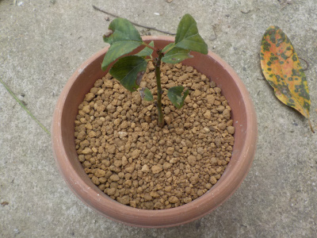
挿し木の梅は夏の間あまり成長しませんでした。
環境を変えてみようと、鉢のサイズを大きくしました。
冬までにちょっとでも大きくなって欲しいです。
【梅TOP】
【果物TOP】
【園芸TOP】
2020/06/07
梅の挿し木がしおれてしまいました。
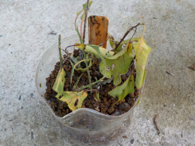
シオシオで枯れそうですね。
今年の挿し木は失敗かな？
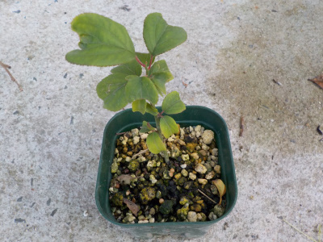
去年の挿し木はちょっと成長しました。
【梅TOP】
【果物TOP】
【園芸TOP】
2020/05/10
今年も梅の挿し木をしました。
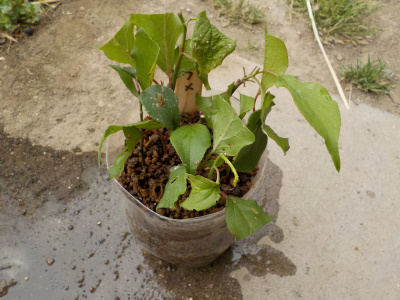
去年挿し木に成功したので、今年もやりました。
10本挿し木しましたが、確率はどうなるでしょうね。
去年の成功は奇跡的な成功だったりして。
【梅TOP】
【果物TOP】
【園芸TOP】
2020/03/08
挿し木の梅を植え替えしました。
2020/02/23
挿し木の梅が咲きました。
2020/02/15
挿し木の梅に蕾がありました。
2019/09/28
梅の挿し木に成功しました。
2019/06/23
ペットボトルで梅の挿し木に挑戦。
2019/01/13
梅が綺麗でした。
2018/06/24
梅の挿し木はもうしないかな。
2018/06/10
梅の挿し木に挑戦
2018/03/18
梅の花も終わりかけです。
2018/02/24
今年も梅が咲きました。
【梅TOP】
【果物TOP】
【園芸TOP】
2017/02/05
梅が咲き出しました。
2014/03/08
紅梅も咲き出しました。
2014/02/09
今年も梅の季節です。
2013/02/03
もう梅が咲いてる。
2013/04/28
梅の実大量です。
【梅TOP】
【果物TOP】
【園芸TOP】
梅干し食べたいから育てます。
【おいしいものを食べよう。】【しっかり寝よう。】
【ソロ活をしよう!】【季節感のあることをしよう。】【動画視聴はほどほどに。】【当サイトの全てのコンテンツは無断転載禁止です。】